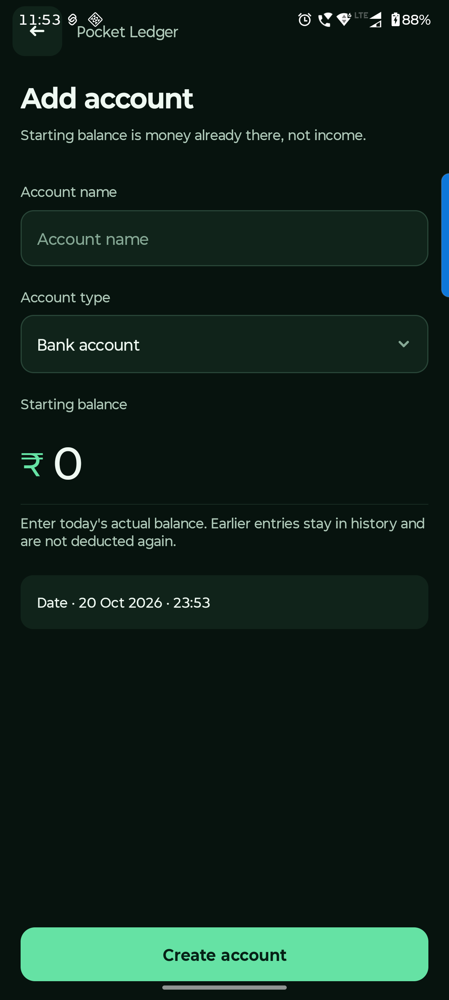

Android handbook · 6.1.0-preview.14
Set up accounts.
Start with your bank, cash, wallet and card balances.
Home → Accounts → Add account
Start with the money you have.
An account is a place your money lives: bank, cash, wallet or credit card. Add each one once.
Name the account
Use a name you recognise, such as Everyday bank or Cash.
Choose its type
Choose Bank, Cash, Wallet or Card. For a card, enter a positive amount owed; a negative amount means credit with the issuer.
Set the starting balance and date
Enter the actual balance at that starting point. Entries before the start stay in history and are not counted again.
Save, then link payment names
Open the account → Account settings → Add payment alias (UPI / debit card). A payment name uses the linked account balance.
Account settings also has balance adjustment with a reason, default payment and archive. Archiving keeps the account in Overall balances and history.

Questions you might have.
Why do old expenses not affect an account?
Older unassigned expenses can be linked to the correct account later. A payment label alone does not create an account balance. Also check whether their dates are before the account’s starting balance date.
Why does a balance not match this month’s spending?
Balances are current. A month filter only changes period reports. Check the account’s opening amount/date, linked payment choices and later entries. Do not enter opening money a second time as Income.
What does archive do?
Archive hides the account from active choices while retaining history and its balance in Overall. Settle or transfer remaining money if you want a zero balance. Delete is available only for an unused account.